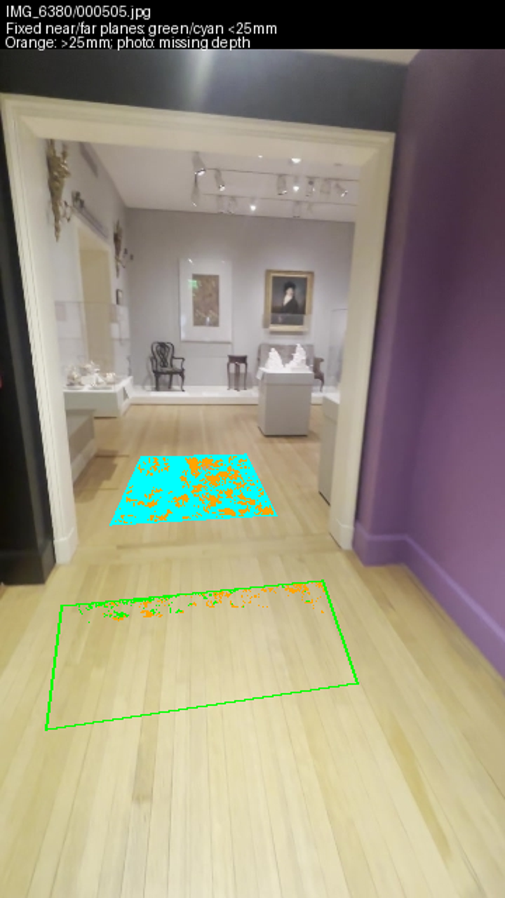
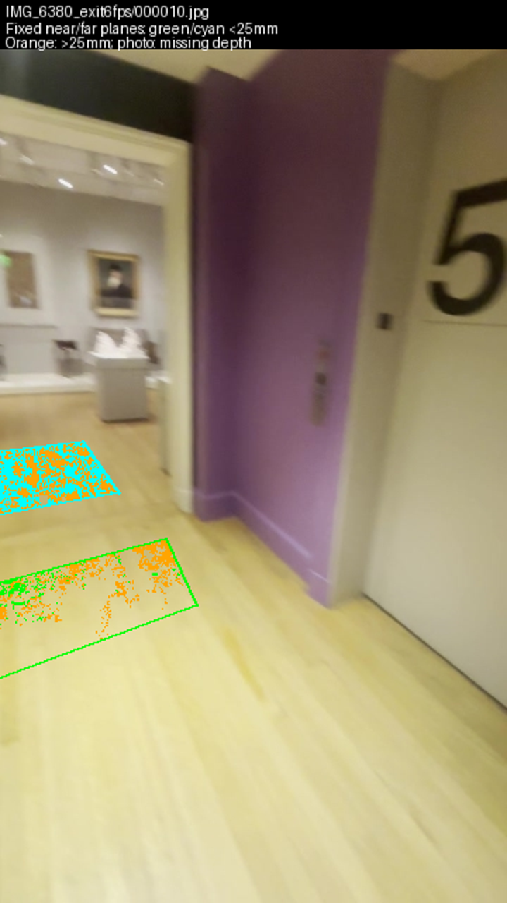
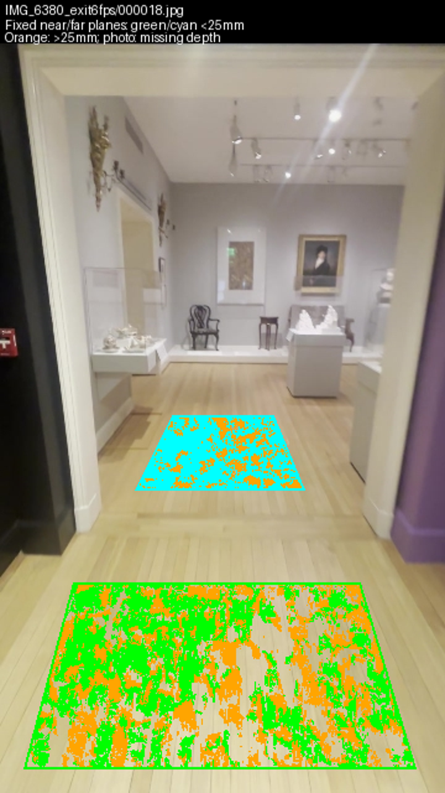
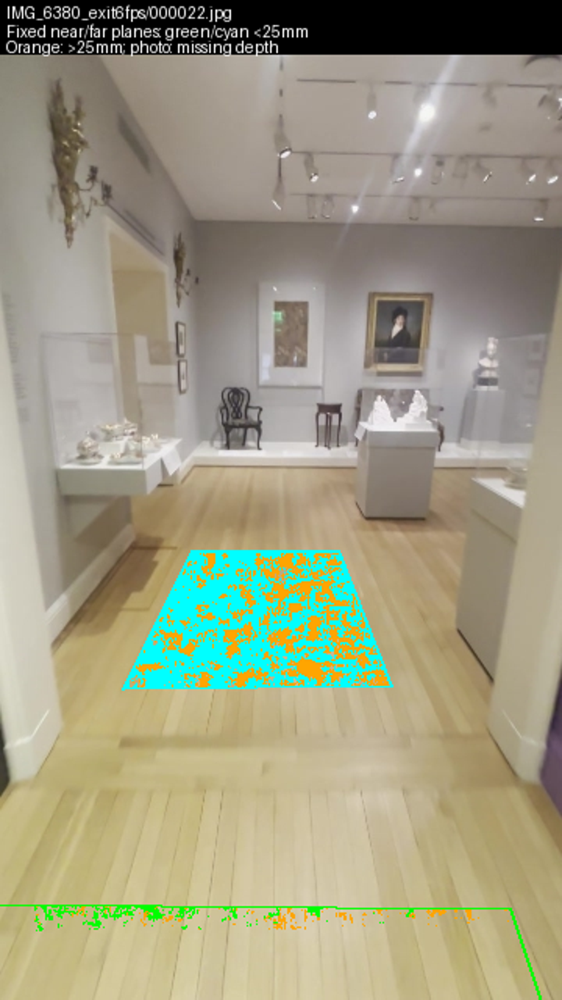
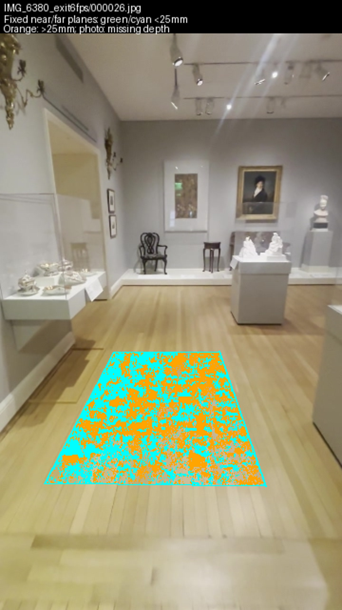

29 September 2026 · 22:30 UTC heartbeat · Collection prototype #182 · $0 spent
Green/cyan samples are within 25 provisional mm of the fixed near/far planes; orange samples miss. Areas showing only the photograph have no usable depth. Each polygon follows the same physical patch across camera views, with no plane refit or rejection of disagreeing samples.
Near floor remains poorly supported. Other usable views cover only 4–19% of its projected patch. Far-floor coverage is 81–99%, but 90th-percentile discrepancies range from 4.0 to 7.3 provisional cm. Sparse geometry provides no near-floor points in these patches. This does not establish a real slope or step.
| View | Patch | Depth coverage | Within 25 mm | 90% absolute error | Sparse points |
|---|---|---|---|---|---|
| IMG_6380/000505.jpg | near | 3.8% | 42.0% | 9.6 cm | 0 |
| IMG_6380/000505.jpg | far | 98.9% | 71.7% | 4.0 cm | 1 |
| IMG_6380_exit6fps/000010.jpg | near | 18.6% | 23.0% | 14.5 cm | 0 |
| IMG_6380_exit6fps/000010.jpg | far | 95.4% | 52.8% | 5.7 cm | 0 |
| IMG_6380_exit6fps/000018.jpg (fit control) | near | 66.5% | 52.8% | 7.0 cm | 0 |
| IMG_6380_exit6fps/000018.jpg (fit control) | far | 99.5% | 70.4% | 4.2 cm | 1 |
| IMG_6380_exit6fps/000022.jpg | near | 4.8% | 60.1% | 7.5 cm | 0 |
| IMG_6380_exit6fps/000022.jpg | far | 97.0% | 63.1% | 4.9 cm | 3 |
| IMG_6380_exit6fps/000026.jpg | far | 80.7% | 46.2% | 7.3 cm | 8 |
Exit frame 14 has identical image and depth hashes to survey frame 505 and is counted only once. The near patch crosses the camera plane in frame 26 and is not evaluated. Frame 18 is the fit control. These depth maps share multiview inputs; they are not independent held-out captures.





All visible projected masks were inspected: floor only, with expected clipping at image edges; no displayed case or pedestal overlaps. Bookcase-derived scale remains provisional. No room shell, walk, collision, camera or performance acceptance.
Next: triangulate identifiable floor/threshold landmarks from original-resolution views and reserve another view before fitting. Preserve the failed depth estimates; do not repeat the completed depth sweep.
Repository checks pass; Shell playtest repeats the same seven failed checks as the preceding tick. No runtime or 3D Viewer changes.
Measurements and source hashes · Repository check · Shell playtest